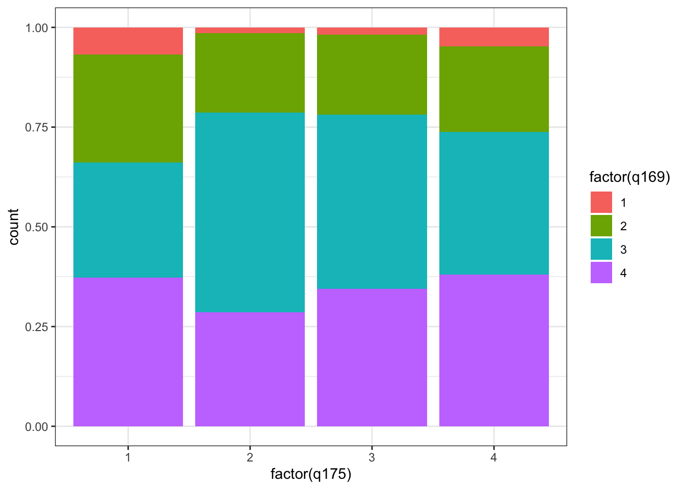

Chapter 2 Intro to R
Week 3 tutorial goals:
- R Basics
- Object types
- Working directory
- Importing data
- R Project
- Exploring data
2.1 RStudio
What is R? What is coding?
- Coding is writing instructions in a computer language. There are lots of coding languages (python, html, Javascript, etc).
- The computer reads the code and executes the commands.
Ris a coding language AND “back-end” software for statistical computing.- Write the R code in an R script (file).
- Run the code/script and the computer follows the instructions.
The code is an important product! It’s not “rough work”.
2.1.1 RStudio: Integrated Development Environment (IDE) editor:
R itself is very annoying and difficult to use

RStudio is more user friendly, with many nice features.
- R studio has R do the calculations in the background
- Always open and use RStudio! Never R!

Console
Output: shows code run, (some) results, errors, etc
- Can write code directly here, but don’t. Have to re-type every time.

Environment
The environment lists saved objects
- Object can be many things: one number, analysis results, dataset, etc.
- Can “call” (use) them multiple times.

 “Files” doesn’t mean all the files on your computer.
“Files” doesn’t mean all the files on your computer.
2.2 Getting started
A sophisticated calculator
R can do whatever your calculator can do, and much more.
## [1] 4## [1] 50- Ignore the ## and the number in brackets [1], they’re not really part of the output and won’t show up if you make a proper table.
Objects
Objects store data. Assign (create/save/change) objects using <-
- R does not save calculations by default! You have to put it in an object.
The way to assign an object is to type object name <- data. For example,
You will see obj1 added to your environment panel.
- Names of objects can only contain letters, numbers, _ (underscore), or . (period), and must begin with a letter” (An Introduction to R for Research. No spaces!
Functions
Similar to what we did in Excel last week. Functions are what makes R useful.
Lets learn two functions: c() and mean(). The function c() allows you to combine data into a single object. The function mean() allows you to calculate the mean value, similar to the AVERAGE function we used in Microsoft Excel last week.
- Use
?<functionname>to pull up the R documentation for the function. For example, ?c()
We can use c() to combine elements, such as numbers. We can then run a function like mean() on the combined output.
## [1] 10 20We assign a new object and run mean() on the new object.
- We called the new object “obj2”, but you could pick a different name.
## [1] 15Data types
Data types tell R how the object should be read. Why do they matter? They affect what calculations can be done and how functions work.
Words or labels can be specified using quotations ". These are known as characters in R.
The function class() will tell you what kind of data type a variable is.
Now lets create two objects, one with numbers and one with characters.
## [1] "numeric"## [1] "character"The exact same numbers can be read as numbers or characters. The numbers 1, 2, 3 could refer to the numeric type, or they could refer to the labels “1”, “2”, “3”, which are the character type.
- This is sometimes a problem for students. If your code is giving an error, check the class of the object.
## [1] "character"We will only use numeric/integer, character, and logical (true/false) data types. Others exist, but you don’t need to know about them.
Data frames
To make a dataset object we use the data.frame() function. Each variable can only be one data type. If there is a mix, it will be forced to be character.
View the data frame.
Dataframe Analysis
If a dataframe has multiple variables, you need to tell the function both.
- dataframe first
- then: $
- variable name
Calculate the mean
Now another mean:
Why didn’t that work?
Now lets make a plot of the data (we will learn the details later).
This code is for a scatterplot:

## Error in plot.window(...): need finite 'xlim' valuesThis fails. name is a character variable, and R cannot put words on a scatterplot axis.
A bar chart uses the names as labels and the scores as heights:

2.3 Opening Data Files
You can open data files by importing the dataset.
- There are different formats of datasets, but Comma Separate Values (csv) is the most common.
Menu: File> Import Dataset > From Text (base R)
- Navigate to the STAR Dataset on your computer and import it
Working Directories
The working directory is the folder where R defaults to open and save files.
Find the current working directory using the function getwd().
Change the working directory using the function setwd(““)
- Use getwd() after?
If the file you want is not in the current working directory, you can either:
- Move the file to your working directory
- change your working directory (Menu: Session > Set Working Directory > Choose Directory, and select the folder where the file is located)
- Advanced move: if the file is in a subfolder of your working directory, give its partial path, e.g.
read.csv("data/STAR.csv")
- Advanced move: if the file is in a subfolder of your working directory, give its partial path, e.g.
We are going to use the function read.csv(), which takes a file path for its first argument.
R project to organize our workflow
File>New Project...- The location of your new project will become the default working directory. You don’t have to set your working directory every time you reopen RStudio.

If you are not using your own laptop, save it on a portable storage, e.g. OneDrive or your thumbdrive.

You should see a fresh view of RStudio with the project name on top.


Exploring the data
Now, we are going to do something similar to what we did with Microsoft Excel last week.
## classtype reading math graduated
## 1 small 578 610 1
## 2 regular 612 612 1
## 3 regular 583 606 1
## 4 small 661 648 1
## 5 small 614 636 1
## 6 regular 610 603 0- Identify the number of observations and names of variables
## [1] "classtype" "reading" "math" "graduated"## [1] 1274- Object type
## [1] "character"- Listing unique values for a column
## [1] "small" "regular"- Calculating mean
## [1] 628.803## [1] 0.8697017- Finding mode
- NOT
mode(), that does something different! Common error.
##
## 0 1
## 166 1108- Calculating median: median()
median()
## [1] 629- Quantiles: quantile()
?quantile
# 25th percentile, 50th percentile, 75th percentile
quantile(star$reading, probs=c(.25,.5,.75))## 25% 50% 75%
## 602 629 654- Standard deviation
## [1] 36.72968- Another convenient way to get mean and median
## Min. 1st Qu. Median Mean 3rd Qu. Max.
## 527.0 602.0 629.0 628.8 654.0 753.0Don’t forget - you have a handy summary sheet of functions!
2.4 Notes for assignment 1
Object name
Object name assignment is important. If you name your data set dat, you should call upon the object dat whenever you want to use that object.
Checking code before submission
Before submitting your code, clear your workspace and restart an R session. Then, select your entire R script and run the code. Your R script should run from beginning to end with no errors.
Removing objects using rm()
rm() is a function that accepts two types of arguments,
- the objects to be removed, as names (unquoted) or character strings (quoted)
- list – a character vector (or NULL) naming objects to be removed
Restarting R sessions and clearing workspace
When you are working on something new, you should always restart your R session and clear your workspace.
Start a new R session by going to Session > Restart R

Note: Depending on your default setting, restarting R session may not clear your environment. If so, you can do it by clicking on Session > Clear Workspace…
2.5 Additional Resources
- An Introduction to R for Research, chapter: Introduction
- Practise R on your own using Swirl: Learn R, in R
Comments
Rdoes not evaluate lines starting with#. This allow us to add comments and explanations to the code.